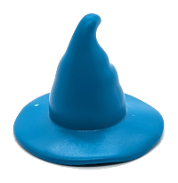

Welcome to the SampleSpace!The SampleSpace is a hidden collection of bits and pieces. Everything here is beyond optional for the USMR course.
If you’re feeling inquisitive, have a nose around.
If you came here by accident and don’t like the look of it, that is absolutely fine, you can completely forget about this page (and will probably be better off for doing so!)
simulating associations between categorical variables
Following from one of last week’s optional exercises, how do we simulate some data that we might use in a \(\chi^2\) test?
This is actually a bit more involved, because we’re not able to use things like rnorm for categories..
I figured the most easy-to-understand way to do this might be to rely heavily on sample():
Questions..
- in the current format, should is there an association between X and Y?
- if we change line
prob = c(.33,.33,.33)toprob = c(.6,.1,.3), are we creating an association between X and Y? - if we change one of the
prob = c(.1,.4,.5)toprob = c(.5,.4,.1)are we creating an association between X and Y?
a use of simulation
We’re going to go back to the t-test simulation from last week’s optional exercises, because it’s less code.
But.. we’re now going to make it into a function!
Below, the inside of the function is actually just the same as the optional extra from last week. We’ve just wrapped it in the function(){... } bit and given it a name.
It means we can now just run this, and it will:
- fake some data,
- do a t.test on the fake data, and
- return the p-value
Last week, one of the questions asked:
- “If we just run this over and over again, without changing anything in the code, will we always get a non-significant result?”
Now we’ve made it a function, we can actually do this quickly! Just like when we used the dice() function in week 1!
So we can ask things like, “of the 1000 p-values from t-tests on 1000 fake datasets where there is no difference in means, how many are <.05?”:
What about if there is a difference in means? Let’s make a new function, but with just a small difference in means of 0.5:
And again let’s run this 1000 times, and plot all the p-values we get out:
Question
How many people do we need in each group in order to correctly reject the null hypothesis roughly 80% of the time?
Why is this useful? It’s a “power analysis”! It can help us to work out how much data to collect!
It tells us how much data would be needed to correctly conclude there is a mean difference of 0.5 between the two groups.
note: in practice this is always difficult, because it requires us to know before collecting the data a) what size of an effect we would expect, and b) what variability we would expect. Essentially, it requires us to guess at the mean difference of 0.5 and sd of 2..